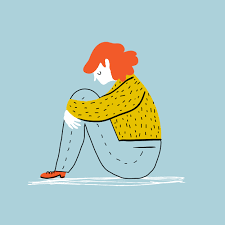
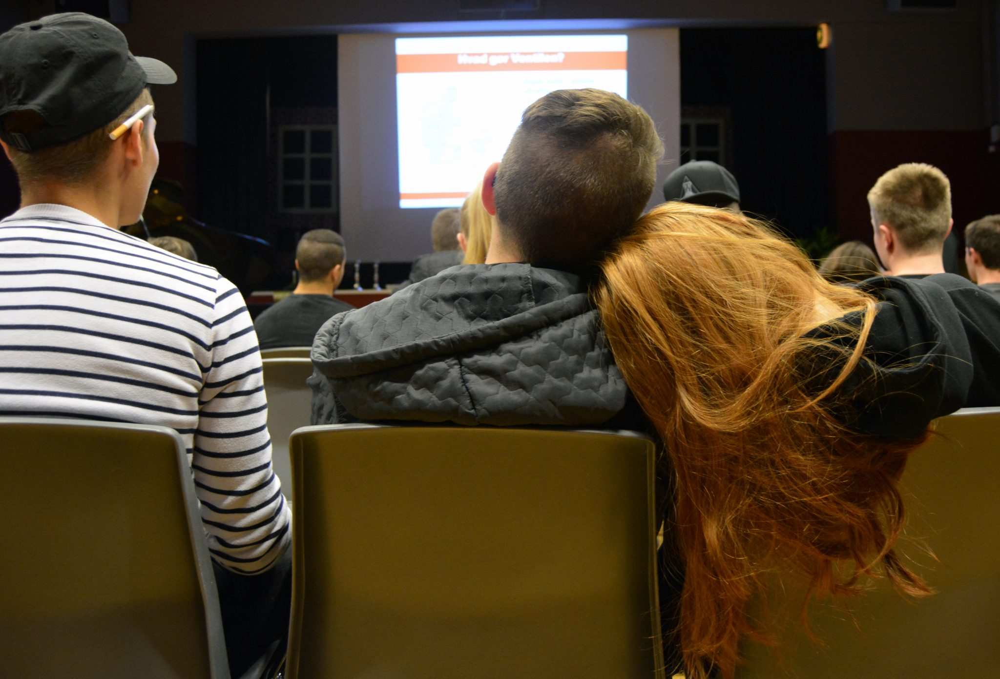
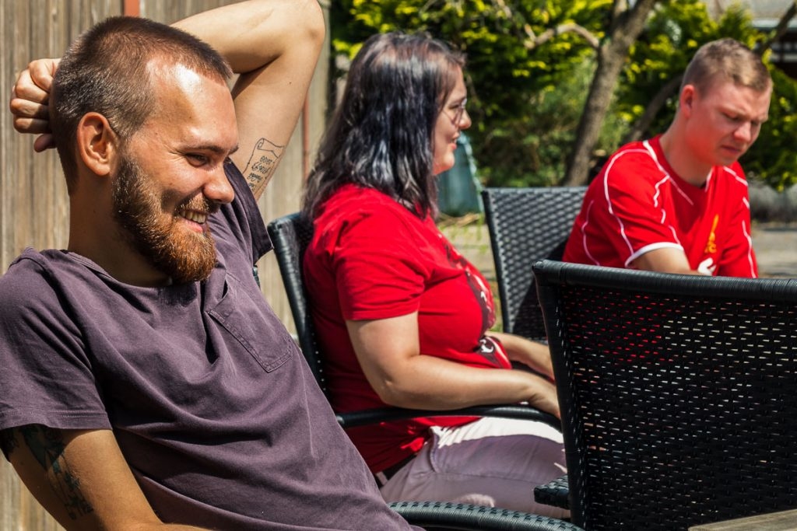

Ventilen er et socialt organisation bestående af frivillige, hvor deres hoved emne er bekæmpelse af ensomhed blandt unge fra 15 - 25 årige.
For at bekæmpe ensomehed holder Ventilen arrangementer og sociale events for at skabe et tæt fællesskab mellem de unge
Det er de frivillige der står for selve opgaven at opretholde og holde styr på arrangementerne
Ensomhed kan føles forskelligt fra person til person, da der findes flere typer af ensomhed:
Det er vigtigt at pointere at ensomhed ikke er en sygdom, men et symptom på at noget kan være galt. Ensomhed forekommer hyppigst når der sker et ’skift’ i livet. Fx at ens forældre går fra hinanden, man skifter skole eller på anden måde. Alle kan blive ramt af ensomhed og af mange grunde. Folk reagerer også forskelligt på det. Nogle bliver meget stille og indadvendte, mens andre bliver meget mere frembrusende og ’larmende’.
I Ventilen rækker vi en hånd ud til de ensomme og giver dem et værested og en socialomgangskreds for at afhjælpe ensomhed hos unge. Vores væresteder består af en masse unge ligesom dig og bestyret af studerende, frivillige, som også har et kendskab til ensomhed. Det er 100% anonymt at deltage hos Ventilen. Hos Ventilen er vi typisk sammen om at tage på udflugter, lave mad, spille spil, eller hvad vi ellers føler vi har lyst til. Den eneste forventning vi har til dig, er at du har lyst til at gøre noget ved ensomheden. Vi ved dette kræver meget mod til at turde springe ud i det, men vores erfaring fortæller os, at det er det der skal til. Derudover kan Ventilen desværre ikke tage imod ensomme med svære psykiske lidelser eller alkohol- og/eller stofmisbrugere. Ellers står vi klar til at hjælpe dig.
De frivillige som arbejder hos Ventilen er nogenlunde jævnaldrende med dig og står klar til at introducere og hjælpe dig hos Ventilen. Hos os er det vigtigt at alle føler sig velkomne, trygge og taget godt imod. På den måde bygger vi bedst sociale relationer til hinanden og er med til at skabe Ventilen som det unikke værested, det er.
Det kan også være en blanding af nogle af dem eller nogle. Uanset hvad har Ventilen fuld forståelse for din situation og kan være med til at hjælpe dig ud af dette.
Det er vigtigt at pointere at ensomhed ikke er en sygdom, men et symptom på at noget kan være galt. Ensomhed forekommer hyppigst når der sker et ’skift’ i livet. Fx at ens forældre går fra hinanden, man skifter skole eller på anden måde. Alle kan blive ramt af ensomhed og af mange grunde. Folk reagerer også forskelligt på det. Nogle bliver meget stille og indadvendte, mens andre bliver meget mere frembrusende og ’larmende’.